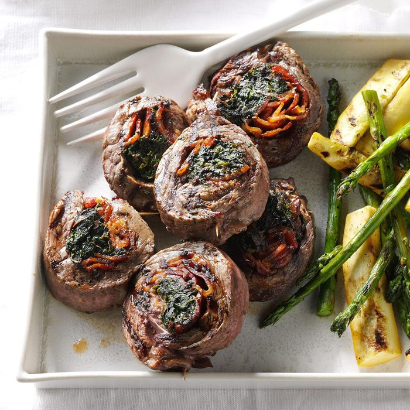

Steak and Spinach Pinwheels

Description:
Steak and Spinach Pinwheels: butterflied flank steak
stuffed with spinach, garlic, bacon and parmesan cheese. Best served
with roasted brocolli and angel hair tossed in garlic and olive oil.
Ingredients:
Directions:
- Butterfly the steaks so they lie flat and are roughly
the same thickness throughout; season with salt and pepper
and set aside.
- Finely chop the spinach and garlic; combine in bowl and mix
thoroughly.
- Shred parmesan cheese into mixture, and stir once more.
- Cover steaks with even coating of spinach/garlic/cheese mixture.
- Lie bacon flat on top of mixture, all parallel to one another.
- Roll steaks up in direction bacon is lying; once rolled, insert
wooden skewers at equal distance from one another.
- Cut steak into even pieces.
- Broil on high for 10-15 minutes, flipping half-way through.
- Let rest for 5 minutes before eating.